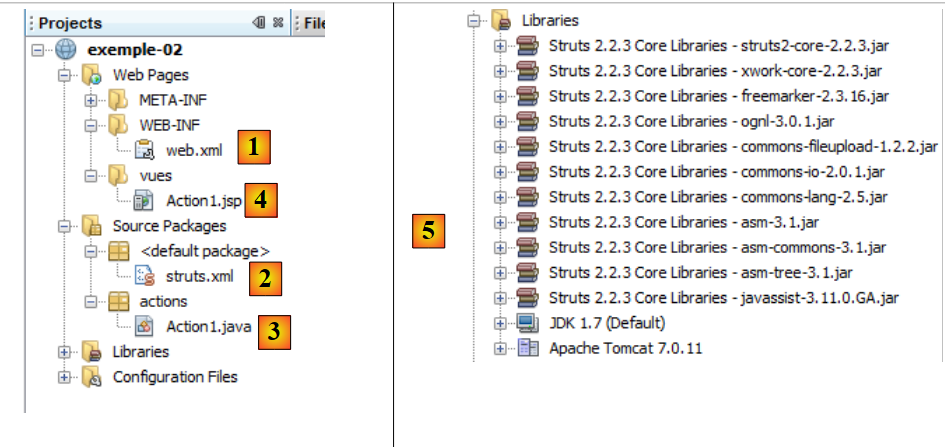
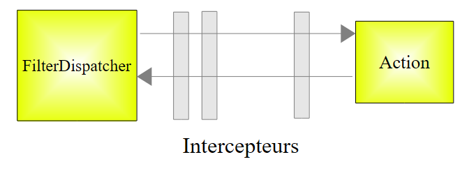

3. Exemple 02 – Injection de paramètres dans l'action
3.1. Le projet Netbeans
 |
- en [1,2], les fichiers de configuration
- en [3], l'action
- en [4], la vue
- en [5], les bibliothèques du projet
3.2. Les fichiers de configuration
Le fichier [web.xml] est le suivant :
<?xml version="1.0" encoding="UTF-8"?>
<web-app xmlns="http://java.sun.com/xml/ns/javaee"
xmlns:xsi="http://www.w3.org/2001/XMLSchema-instance"
xsi:schemaLocation="http://java.sun.com/xml/ns/javaee http://java.sun.com/xml/ns/javaee/web-app_3_0.xsd"
version="3.0">
<display-name>Struts tuto-001</display-name>
<filter>
<filter-name>struts2</filter-name>
<filter-class>org.apache.struts2.dispatcher.FilterDispatcher</filter-class>
</filter>
<filter-mapping>
<filter-name>struts2</filter-name>
<URL-pattern>/*</URL-pattern>
</filter-mapping>
<session-config>
<session-timeout>
30
</session-timeout>
</session-config>
</web-app>
Nous avons déjà commenté ce fichier. Nous ne le ferons plus. Il faut simplement se rappeler qu'il fait en sorte que toutes les URL (ligne 15) sont passées au filtre de Struts (ligne 10).
Le fichier [struts.xml] est le suivant :
<?xml version="1.0" encoding="UTF-8" ?>
<!DOCTYPE struts PUBLIC
"-//Apache Software Foundation//DTD Struts Configuration 2.0//EN"
"http://struts.apache.org/dtds/struts-2.0.dtd">
<struts>
<package name="default" namespace="/" extends="struts-default">
<default-action-ref name="index" />
<action name="index">
<result type="redirectAction">
<param name="actionName">Action1</param>
<param name="namespace">/actions</param>
</result>
</action>
</package>
<package name="actions" namespace="/actions" extends="struts-default">
<action name="Action1" class="actions.Action1">
<result name="success">/vues/Action1.JSP</result>
</action>
</package>
</struts>
- lignes 7-15 : définissent le package [default], celui qui est utilisé lorsqu'une action n'a pu être trouvée dans un autre package.
- ligne 8 : définit une action par défaut pour ce package nommé index.
- lignes 9-14 : configurent l'action nommée index. On voit qu'elle n'est pas associée à une classe (absence de l'attribut class ligne 9).
- ligne 10 : le résultat est pour la clé success (absence de l'attribut name). Il est de type redirectAction (attribut type). Ce type permet de rediriger une action vers une autre action. Ici lorsque le client demandera l'action /index, il sera redirigé vers l'action /actions/Action1 (lignes 11-12).
- lignes 16-20 : définissent le package actions (name) associé aux actions d'URL /actions/Action (class).
- lignes 17-19 : configurent l'action /actions/Action1 (name). Sur demande de cette action, Struts instanciera la classe actions.Action1 (class), puis la méthode execute de cette classe sera exécutée. Celle-ci devra rendre la clé success, car c'est la seule clé définie ligne 18.
- ligne 18 : pour la clé success, la vue à afficher sera la page JSP [vues/Action1.JSP].
Au final, on retiendra que le projet Struts ne sait exécuter que l'action d'URL [actions/Action1].
3.3. L'action
L'action Action1 est représentée par la classe suivante :
package actions;
import com.opensymphony.xwork2.ActionSupport;
public class Action1 extends ActionSupport{
// modèle de l'action
private String param1="valeur1";
private String param2="valeur2";
@Override
public String execute(){
return SUCCESS;
}
// getters et setters
public String getParam1() {
return param1;
}
public void setParam1(String param1) {
this.param1 = param1;
}
public String getParam2() {
return param2;
}
public void setParam2(String param2) {
this.param2 = param2;
}
}
- lignes 8-9 : deux champs accessibles via des get / set (lignes 18-32)
- lignes 12-14 : la méthode execute rend la clé success comme il était attendu. Elle ne fait rien d'autre.
3.4. La vue JSP
La vue Action1.JSP est la suivante :
<%@page contentType="text/html" pageEncoding="UTF-8"%>
<%@ taglib prefix="s" uri="/struts-tags" %>
<!DOCTYPE html>
<html>
<head>
<meta http-equiv="Content-Type" content="text/html; charset=UTF-8">
<title>Action1</title>
</head>
<body>
<h1>Action1</h1>
param1=<s:property value="param1"/><br/>
param2=<s:property value="param2"/><br/>
</body>
</html>
Cette vue est affichée après l'exécution de la méthode [Action1].execute. Elle affiche les valeurs des champs param1 (ligne 11) et param2 (ligne 19) de la classe [Action1].
3.5. Les tests
Exécutons le projet [exemple-02] :
 |
- en [1], l'URL demandée. A noter que l'URL initiale demandée était [/exemple-02] sans action. Les fichiers [web.xml] [struts.xml] ont alors été exploités. On a vu que le fichier [web.xml] confiait le traitement de toute requête à Struts 2. Le fichier [struts.xml] a alors été exploité :
<struts>
<package name="default" namespace="/" extends="struts-default">
<default-action-ref name="index" />
<action name="index">
<result type="redirectAction">
<param name="actionName">Action1</param>
<param name="namespace">/actions</param>
</result>
</action>
</package>
<package name="actions" namespace="/actions" extends="struts-default">
<action name="Action1" class="actions.Action1">
<result name="success">/vues/Action1.JSP</result>
</action>
</package>
</struts>
L'URL [/exemple-02] sans action a été traitée par le package default des lignes 2-10. En l'absence d'action dans l'URL, l'action est devenue index à cause de la ligne 3 (action par défaut). Les lignes 4-8 ont fait que Struts a renvoyé au client une URL de redirection [/exemple-02/actions/Action1] comme il est affiché en [1].
L'action [Action1] s'est alors exécutée comme configurée lignes 12-14. Sa méthode execute a été exécutée. On a vu qu'elle renvoyait la cé success. La ligne 13 de [struts.xml] a fait que la page [/vues/Action1.JSP] a été renvoyée au navigateur :
...
<html>
<head>
<meta http-equiv="Content-Type" content="text/html; charset=UTF-8">
<title>Action1</title>
</head>
<body>
<h1>Action1</h1>
param1=<s:property value="param1"/><br/>
param2=<s:property value="param2"/><br/>
</body>
</html>
Les lignes 9 et 10 ont affiché les valeurs des champs param1 et param2 de [Action1]. C'est ce que montre [2].
Demandons une autre URL :
 |
En [1], l'action [Action1] est demandée avec des paramètres param1 et param2. Revenons au schéma d'exécution d'une action Struts :
 |
Le contrôleur [FilterDispatcher] fait exécuter la méthode execute de l'action. Le flux d'exécution passe au-travers d'intercepteurs. L'un d'entre-eux traite la chaîne de paramètres param1=qqchose¶m2=autrechose. Il utilise alors les méthodes setParam1 et setParam2 de l'action Action1 :
package actions;
import com.opensymphony.xwork2.ActionSupport;
public class Action1 extends ActionSupport{
// modèle de l'action
private String param1="valeur1";
private String param2="valeur2";
@Override
public String execute(){
return SUCCESS;
}
// getters et setters
public String getParam1() {
return param1;
}
public void setParam1(String param1) {
this.param1 = param1;
}
public String getParam2() {
return param2;
}
public void setParam2(String param2) {
this.param2 = param2;
}
}
L'intercepteurs params exécute les méthodes suivantes :
Il faut donc qu'elles existent. On retiendra la chose suivante : pour récupérer les paramètres parami d'une requête Http, il faut que l'action Struts appelée ait des champs portant les mêmes noms que les paramètres et des méthodes get / set associées.
Lorsque la méthode execute de [Action1] s'exécute, les champs param1 et param2 ont été initialisés par l'intercepteur params :
La méthode execute rend la clé success et la page [Action1.JSP] s'affiche avec les nouvelles valeurs de param1 et param2 [2].